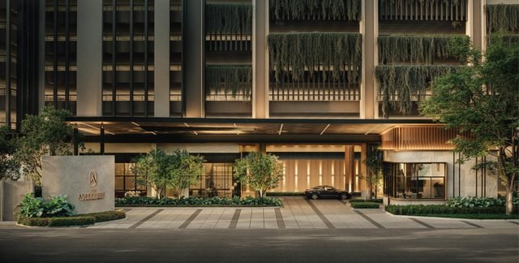
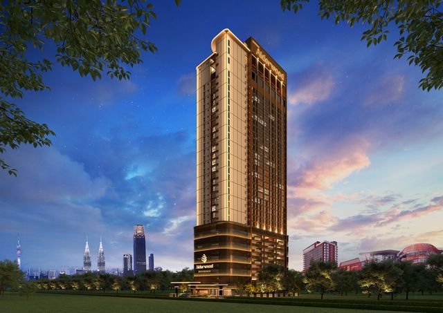
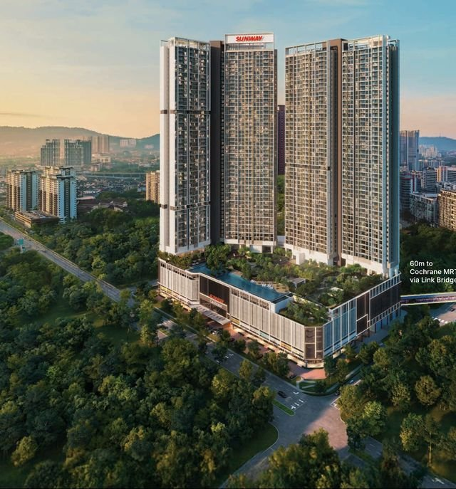

注册房地产经纪 E3208 · PropNex Realty，吉隆坡
Jessica Leong 协助您在吉隆坡和雪兰莪置业，凡事有据可查，一目了然。
Jessica Leong 是 PropNex Realty Sdn Bhd 旗下的注册房地产经纪，服务 KLCC、Cochrane 与 Maluri 以及雪兰莪的新盘公寓买家，也协助客户购买雪兰莪的厂房和仓库，以及银行拍卖屋。
- 约 12 年房地产经验
- MIEA 会员
- 工业工程硕士（MSc）

从一个问题开始
不知从何开始？点一个问题就好。
每个问题都会打开 WhatsApp 并预先填好内容，一按即可发送。
Jessica 能为您做什么
三类产业，一位专人跟进
服务地区
吉隆坡及雪兰莪
每个地区都链接到 Jessica 的项目资料库 KL Selangor Estates 上的相关指南。
来自项目资料库
Jessica 跟进的部分项目
各项目的价格、户型及发展商的广告准证，均在 KL Selangor Estates 持续更新。

CloutHaus Residences
Jalan P. Ramlee，KLCC · 详见 KL Selangor Estates

The Ashbourne
U-Thant，吉隆坡 · 详见 KL Selangor Estates

Armani KLM The Yard
Bukit Raja，巴生 · 详见 KL Selangor Estates

Alderwood Residence
Taman Maluri，吉隆坡 · 详见 KL Selangor Estates

Armani Bizcore
Bukit Raja，巴生 · 详见 KL Selangor Estates
Dawn KLCC
KLCC · 详见 KL Selangor Estates

Divine KLCC
Jalan Saloma，KLCC · 详见 KL Selangor Estates

ForestHill Residences
Damansara Perdana，八打灵再也 · 详见 KL Selangor Estates

Sunway Cochrane
Jalan Cochrane，吉隆坡 · 详见 KL Selangor Estates
认识 Jessica
用工程师的方式比较房产
我在转行做房地产之前是一名工业工程师，至今仍保持这种做事方式：先收集发展商核准的资料，把各个选项并排列出，在您做决定之前把利弊讲清楚。我从事房地产约十二年，现以高级房地产谈判员（Senior Real Estate Negotiator）及注册房地产经纪身份，在 PropNex Realty 位于 Marc Residence 的 KLCC 分行执业。
- 注册房地产经纪 E3208
- 工业工程硕士（MSc），San José State University
- MIEA 会员 · BOVEAP 注册
专栏文章
Jessica 的最新文章
2026 年 11 月 25 日
在雪兰莪住在 MRT 与 LRT 附近
加影线、布城线、格拉那再也线和莎阿南线对沿线住宅意味着什么：官方客流量、步行范围及 NAPIC 数据背景。
在 KL Selangor Estates 阅读 →2026 年 11 月 24 日
在马来西亚继承房产
遗嘱认证（probate）、遗产管理书、小额遗产、Amanah Raya 与伊斯兰继承法（faraid），以及出售继承房产前要核查的事项。
在 KL Selangor Estates 阅读 →文章以英文撰写。
常见问题
关于与 Jessica 合作的常见问题
Jessica Leong 是注册房地产经纪吗？
是的。Jessica Leong 是注册房地产经纪，注册编号 E3208，在 PropNex Realty Sdn Bhd（E (1) 1800/1）位于 Jalan Pinang、Marc Residence 的 KLCC 分行执业。两个编号都可以在 LPEPH 官方名册 lpeph.gov.my/search-listing 查询核实。
Jessica 服务哪些地区？
KLCC 及吉隆坡市中心、Cochrane 与 Maluri、八打灵再也与白沙罗，以及雪兰莪巴生谷一带，包括巴生、蒲种、加影、士毛月和雪邦的工业区。
Jessica 可以协助哪些类型的房产？
三类：吉隆坡和雪兰莪的新盘公寓及服务式公寓、雪兰莪的厂房和仓库等工业产业，以及银行拍卖屋（Bank Lelong）。
购买银行拍卖屋和一般买卖有什么不同？
拍卖产业是根据拍卖公告（Proclamation of Sale）及其既定条件出售：通常须在拍卖当天缴付订金（一般为底价的 5% 至 10%），并在规定期限内付清余款，而且产业是按现况出售。Jessica 会在您竞拍之前，协助您看懂条件、算清数字。
Jessica 多快会回复？
WhatsApp 是联系她最快的方式。告诉她您在看哪个项目或地区，她会把手上的资料回复给您；如果还没有，也会告诉您什么时候能提供。
告诉 Jessica 您在找什么
说说您看中的地区、预算和时间。她会把已知的情况告诉您，也会说明还有哪些需要核实。